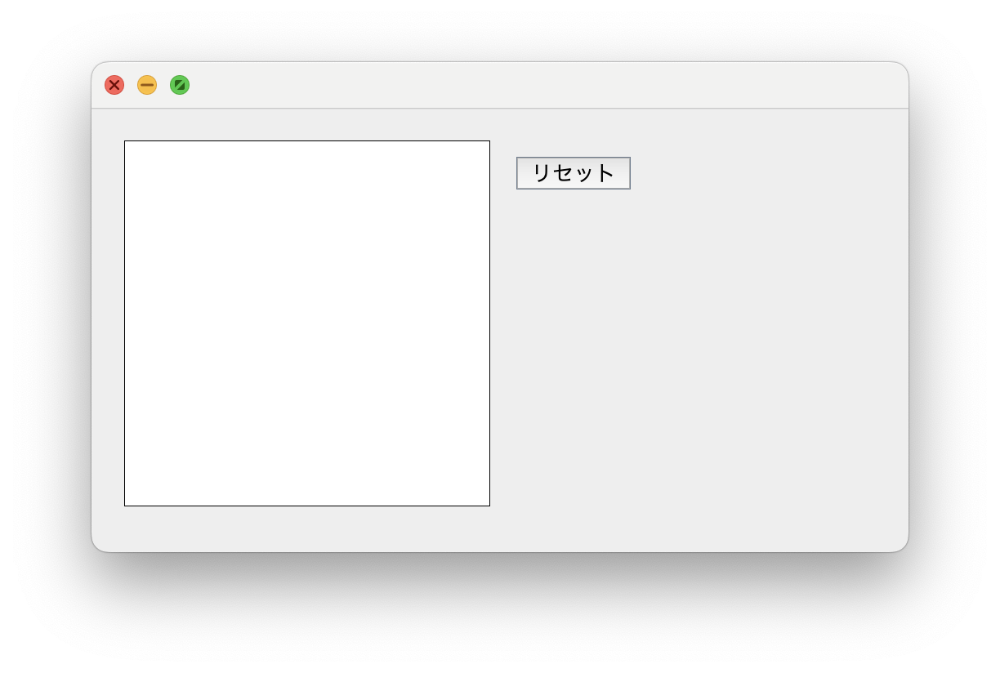

JPanelについて
簡易ペイントソフト
以下がソースコード (Panel.java)
import javax.swing.*;
import java.awt.*;
import java.awt.event.*;
import java.awt.image.BufferedImage;
public class Panel {
public static void main(String[] args) {
JFrame jf = new JFrame();
jf.setSize(500, 300);
jf.setLayout(null);
jf.setDefaultCloseOperation(JFrame.EXIT_ON_CLOSE);
JPanel panel = new JPanel();
panel.setBounds(0, 0, 500, 250);
panel.setLayout(null);
JButton button = new JButton("リセット");
button.setBounds(260, 30, 70, 20);
Canvas canvas = new Canvas();
canvas.setBounds(20, 20, 224, 224);
//Atomicboolean b = new Atomicboolean();
canvas.addMouseMotionListener(new MouseMotionAdapter() {
public void mouseDragged(MouseEvent e) {
canvas.g2.fillOval(e.getX() - 5, e.getY() - 5, 10, 10);
canvas.repaint();
}
});
button.addActionListener(new AbstractAction(){
@Override
public void actionPerformed(ActionEvent e) {
canvas.g2.setColor(Color.WHITE);
canvas.g2.fillRect(0, 0, 224, 224);
canvas.g2.setColor(Color.BLACK);
canvas.repaint();
}
});
panel.add(canvas);
panel.add(button);
jf.add(panel);
jf.setVisible(true);
}
}
class Canvas extends JPanel {
BufferedImage can;
Graphics2D g2;
Canvas() {
can = new BufferedImage(224, 224, BufferedImage.TYPE_INT_ARGB);
g2 = can.createGraphics();
g2.setColor(Color.WHITE);
g2.fillRect(0, 0, 224, 224);
g2.setColor(Color.BLACK);
}
@Override
public void paintComponent(Graphics g) {
super.paintComponent(g);
g.drawImage(can, 0, 0, null);
g.drawLine(0, 0, 224, 0);
g.drawLine(0, 0, 0, 224);
g.drawLine(224, 224, 224, 0);
g.drawLine(224, 224, 0, 224);
}
}
実行結果は以下の通り
